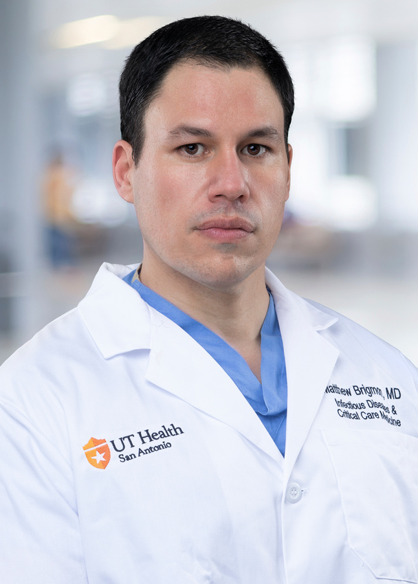
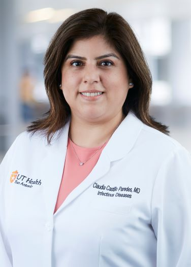
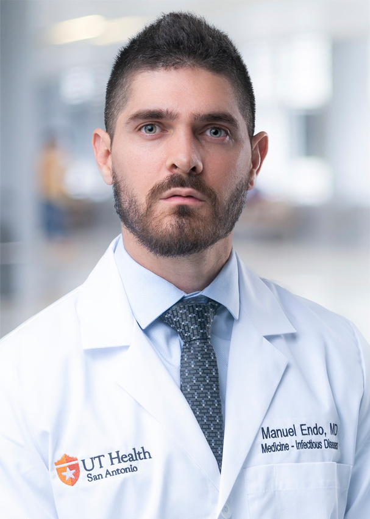

Core Faculty
Jason Bowling, MD
Interim Division Chief/Professor
UT Health San Antonio
Dr. Jason Bowling is an Infectious Disease specialist seeing patients at UT Health San Antonio. He is also an Assistant Professor of Infectious Diseases at UT Health San Antonio. After completing his residency in Internal Medicine, he worked as a hospitalist in private practice for five years before returning to fellowship to pursue subspecialty training in Infectious Diseases. He joined the Division of Infectious Diseases faculty in 2010. Since joining, he has maintained an active role as a clinician. He rotates as the attending faculty physician on the inpatient Infectious Diseases consult service, the inpatient HIV medicine ward team, and the Outpatient Parenteral Antimicrobial Therapy Clinic for which he is also the Medical Director.
View Dr. Bowling's faculty profile

Matthew Brigmon, MD
Alumni (Fellow)
UT Health San Antonio
I am a trained internist and Infectious Disease physician that is completing his training with a year of Critical Care. I am very interested in teaching as well as modalities to treat multiresitant organisms through antimicrobial stewardship and therapies such as novel antibiotics and bacteriophages. During my training as a resident, I was very moved by point of care ultrasound as a new tool for physical exam. The year of the pandemic has led me to want to be involved in the hands-on therapy of patients in addition to my Infectious Diseases training. I enjoy outside hikes, weightlifting, soccer, reading, and football.
View Dr. Brigmon's faculty profile
Jose A Cadena Zuluaga, MD
Professor
UT Health San Antonio
Dr. Jose Cadena Zuluaga was awarded his Doctorate in Medicine from Instituto de Ciencias de la Sulud, Colombia in 2001 and completed his Residency in Internal Medicine and Fellowship in Infectious Diseases at the University of Texas Health Science Center. He is an Associate Professor in Infectious Diseases UT Health San Antonio and a staff physician at South Texas Veterans Healthcare System. He is the Medical Director of Infection Control & Hospital Epidemiology and Assistant Chief of Infectious Diseases at South Texas Veterans Healthcare System. His expertise are antibiotic stewardship, infection prevention and control, and quality improvement in healthcare.
View Dr. Cadena Zuluaga's faculty profile

Claudia Castillo Paredes, MD
Assistant Professor
UT Health San Antonio
View Dr. Paredes's faculty profile
Mark Cedeno, MD
Assistant Professor/Clinical
UT Health San Antonio
View Dr. Cedeno's faculty profile
Divya Chandramohan, MD
Division of Infectious Diseases
UT Health San Antonio
View Dr. Chandramohan's faculty profile
Cheryl Farner, NP
UT Health San Antonio
Cheryl Farner is a dedicated and patient-focused Family Nurse Practitioner with experience in acute patient care, staff development and patient advocacy. She is certified in Neonatal Resuscitation Program, NRP and American Heart Association, BLS. She is currently serving as an APRN at UT Health San Antonio’s COVID-19 call center, that includes contact tracing and workforce monitoring.
View Cheryl Farner's faculty profile

Manuel Endo Carvajal, MD
Assistant Professor/Clinical
Division of Infectious Diseases
UT Health San Antonio
Dr. Manuel Endo was awarded his Doctorate in Medicine from Universidad Libre in Cali, Colombia. He did his social service training transferring critically ill patients from isolated communities in the Colombian pacific coast to high complexity medical centers located in some of the most prominent cities of Colombia. He completed Internal Medicine Residency and Infectious Diseases Fellowship at UT Health Science Center at San Antonio.
Anthony Febres Aldana, MD
Assistant Professor/Clinical
Division of Infectious Diseases
UT Health San Antonio
Heta Javeri, MD
Program Director - Infectious Diseases Fellowship
Assistant Professor/Clinical
UT Health San Antonio
Dr. Heta Javeri is an Associate Professor in the Division of Infectious Diseases at UT Health San Antonio. She is also the Fellowship Program Director of Infectious Diseases in the Department of Medicine. She received her MBBS from Mahatma Gandhi Mission Medical College, India in 2005. She completed her Residency in Internal Medicine and Fellowship in Infectious Diseases at the University of Texas Health Science Center at San Antonio.
Chukwuemeka Okafor, PhD, MPH
Assistant Professor/Clinical
Division Infectious Diseases Fellowship
UT Health San Antonio
Jan Patterson, MD, MS
Professor of Medicine
Associate Dean, Quality & Lifelong Learning
Division Infectious Diseases Fellowship
UT Health San Antonio
Dr. Patterson graduated from UT Medical School at Houston, trained in internal medicine Vanderbilt University Medical Center, and in infectious diseases Yale University School of Medicine. She completed a Masters in Health Care Management at the Harvard School of Public Health. Dr. Patterson has more than 30 years of experience in the field of infection prevention, healthcare epidemiology, and quality improvement and has numerous publications in these areas. She is a Past President of the Society for Healthcare Epidemiology of America, and has served on the Board of Directors for the Infectious Diseases Society of America. Currently, Dr. Patterson is completing a fellowship in in the Andrew Weil Center for Integrative Medicine. She has been a consultant to the South Texas Regional Advisory Council for infectious diseases emergency preparedness since 2001. Dr. Patterson worked in Toronto during the 2003 SARS I pandemic there, and was involved in leading University Health System efforts during the 2009 H1N1 pandemic. She is a part of the COVID-19 Response team at UT Health San Antonio, providing consultation and leadership regarding testing, policy, PPE, and patient care issues.
Thomas Patterson, MD
Co-director
Center for Chronic Infectious Diseases
Dr. Thomas F. Patterson received his Bachelor of Arts degree from Baylor University, in Waco, Texas and his medical degree from the University of Texas Medical School at Houston, Texas. He completed his internship and residency at Vanderbilt University Medical School, in Nashville, Tennessee and at Yale-New Haven Hospital, and a fellowship in infectious diseases at Yale University School of Medicine, New Haven, Connecticut where he also served as an Assistant Professor of Medicine.
View Dr. Patterson's faculty profile
Ruth Serrano Pinilla, MD
Assistant Professor/Clinical
Division Infectious Diseases Fellowship
UT Health San Antonio
Dr. Serrano is an Assistant Professor in the Infectious Disease Division at the University of Texas Health Science Center San Antonio.
She attended Medical School in the “Universidad de Carabobo” in Valencia, Venezuela. She quickly identified her interest in Infectious Diseases during her rural rotation in a remote community near the Orinoco River in Venezuela after treating many patients with tropical infectious diseases. She completed Internal Medicine Residency and Infectious Diseases Fellowship at UT Health Science Center at San Antonio. Dr. Serrano provides treatment for patients with complex infections requiring long term antibiotics in the Outpatient Parenteral Antibiotic Clinic (OPAT) in the Robert B Green Clinic from the University Hospital System. She actively participates in research projects evaluating outcomes of patients who have received OPAT therapy and is interested in evaluating clinical outcomes of patients with complicated fungal infections.
View Dr. Serrano Pinilla's profile
Camille Spears, MD, MPH
Training and Education Specialist
Division Infectious Diseases Fellowship
UT Health San Antonio
Dr. Camille Spears attended medical school at UT Health San Antonio Long School of Medicine. She completed an MD and MPH during her time there, and focused her MPH study on HIV stigma’s relationship to clinical outcomes. She completed her residency in Internal Medicine at Rush in Chicago and subsequently returned to San Antonio to complete her Infectious Disease fellowship at UT Health San Antonio. Dr. Spears has special interests in social and economic determinants of health and reducing stigma in healthcare settings. She is currently an assistant professor and clinical faculty at UT Health San Antonio and practices HIV medicine and primary care at the Alamo Area Resource Center clinic.
Barbara S. Taylor, MD, MS
Director
Center for Chronic Infectious Diseases
Dr. Barbara Taylor is a Professor of Infectious Diseases, the founding Director of the Center for Chronic Infectious Diseases, and the Assistant Dean for the MD/MPH Program at UT Health San Antonio. Dr. Taylor conducts research to improve health outcomes for those living with or at risk for HIV, with a specific focus on Latinx populations, and is an infectious disease specialist with a focus on care of people living with HIV and other viral illnesses. Her current work uses implementation science to address barriers to care for emerging adults with HIV in South Texas and explores risk for STIs in key populations in the Dominican Republic. She is also a principal investigator on the NIH-funded RECOVER study, which works to determine the impact of long COVID in the United States. She is passionate about fostering research that improves the health of Texans and eliminates chronic infectious diseases and their sequelae. In her spare time, she loves walking along the river walk with spouse and her tiny yorkie, reading, and being a sports mom to her two amazing daughters.
View Dr. Taylor's faculty profile
Nathan Wiederhold, Pharm.D
Associate Professor
UT Health San Antonio
View Dr. Wiederhold's faculty profile